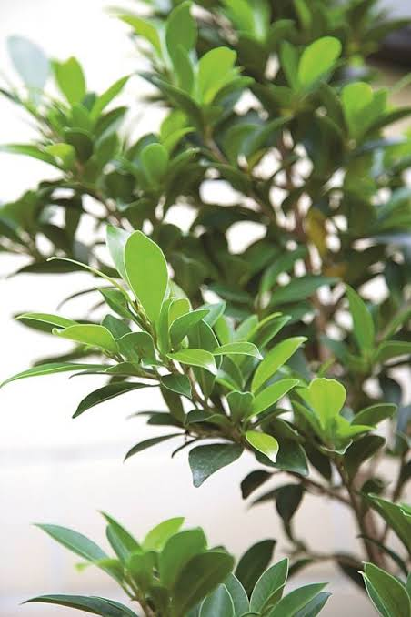
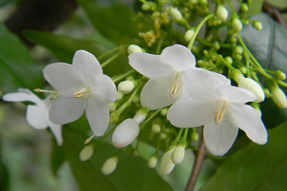
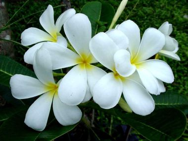
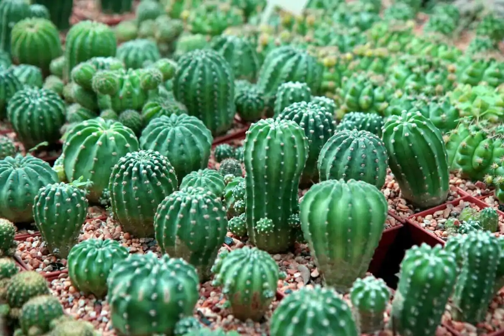

ต้นไม้กลางแจ้งทั้งหมด
ต้นไม้กลางแจ้งทนแดดจัดของไทยมีทั้งไม้ยืนต้นให้ร่มเงาอย่างหูกระจงและอินทนิล รวมถึงไม้ดอกไม้พุ่มยอดนิยม พืชเหล่านี้เติบโตได้ดีในสภาพอากาศร้อนชื้น นิยมปลูกทั้งลงดินเพื่อจัดสวนและปลูกในกระถางเพื่อตกแต่งริมรั้วหรือหน้าบ้าน
|
|

|
ไทรเกาหลี
ลักษณะเด่น นิยมทำแนวรั้วบ้าน ทรงพุ่มแน่น ใบเขียวตลอดปี ชอบแดดจัด
การดูแล ชอบแสงแดดเต็มวัน รดน้ำสม่ำเสมอ ตัดแต่งทรงพุ่มได้ง่าย
ราคา 300 บาท
|
|

|
โมก
ลักษณะเด่น ดอกสีขาวมีกลิ่นหอมอ่อนๆ ตลอดวัน นิยมปลูกริมรั้วหรือหน้าบ้าน
การดูแล ชอบแสงแดดจัดและความชื้นสูง รดน้ำวันละ 1 ครั้ง
ราคา 200 บาท
|
|

|
ลีลาวดี / จำปา
ลักษณะเด่น ไม้ยืนต้นให้ร่มเงา ดอกสวยงามกลิ่นหอม โตไว ทนแล้งดีมาก
การดูแล ชอบแดดจัด ดินระบายน้ำได้ดี ไม่ชอบน้ำขังแฉะ
ราคา 450 บาท
|
|

|
แคตตัส / กระบองเพชร
ลักษณะเด่น หลากหลายสายพันธุ์ ชอบแดดจัด ไม่ค่อยชอบน้ำ เลี้ยงง่ายในกระถางเล็ก
การดูแล รดน้ำเมื่อดินแห้งสนิท (7-10 วันครั้ง) วางในมุมที่ได้รับแสงแดดส่องถึง
ราคา 80 บาท
|